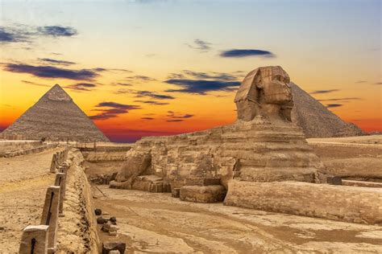

Interesting facts about Egypt
1. The country is ethnically homogeneous, with Egyptians comprising more than 99% of the population. 2. The country's population is estimated to be 90% Muslim (primarily Sunni) and various Christian denominations make up the remaining 10%. 3. Cairo has served as Egypt's capital for more than 1,000 years, but the government is building a new capital some 45 kilometers (28 miles) to the east to help ease congestion in Cairo. Plans call for the yet-to-be-named city to host the main government departments and ministries, as well as foreign embassies. 4. One of the most famous figures tied to Egypt, Cleopatra VII, was Greek. 5. Ancient Egypt produced one of history's earliest peace treaties, the Kadesh Peace Treaty, negotiated in 1259 B.C. with the Hittite Empire. In 1970 the government of Turkey gave a copy of the treaty to the United Nations, where it can be seen at the entrance of the Security Council chambers. 6. Egypt is home to seven UNESCO-designated World Heritage sites: Abu Mena; ancient Thebes with its Necropolis; Historic Cairo; Memphis and its Necropolis; Nubian monuments from Abu Simbel to Philae; the Saint Catherine area; and Wadi Al-Hitan, or Whale Valley, home to fossil remains of the earliest and now extinct form of whales. 7. Various international rights groups, including Amnesty International, Freedom House and Human Rights Watch, criticize the country for low levels of personal freedom and the arrests and jailing of peaceful activists who are critical of the government. 8. Social media accounts with more than 5,000 followers are subject to the country's media laws and can be monitored by authorities and must be licensed by the government. 9. Ancient Egypt produced the world's first prosthetic limb, a toe composed of leather, wood and thread and dated between 950 and 710 B.C. 10. The 365-day calendar that is divided into 12 months was invented in Egypt.